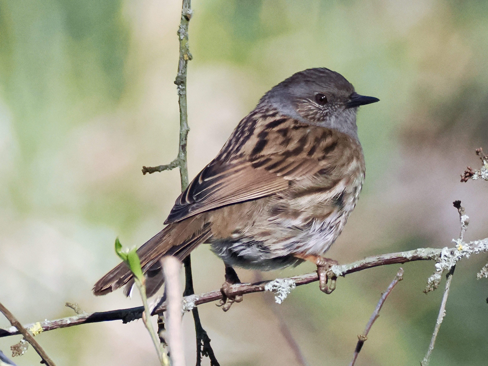

Dunnock
Prunella modularis
Order: Passeriformes
Family: Prunellidae

A small LBJ. Overall brown with streaked back, grey head and brown cheeks. Also known as Hedge Sparrow, but is not actually a sparrow (family Passeridae), and has a thin pointed bill. Common in gardens and hedgerows. Its name comes from Old English dun, meaning brown, and the suffix -ock which describes something small. So... it's literally called LBJ.